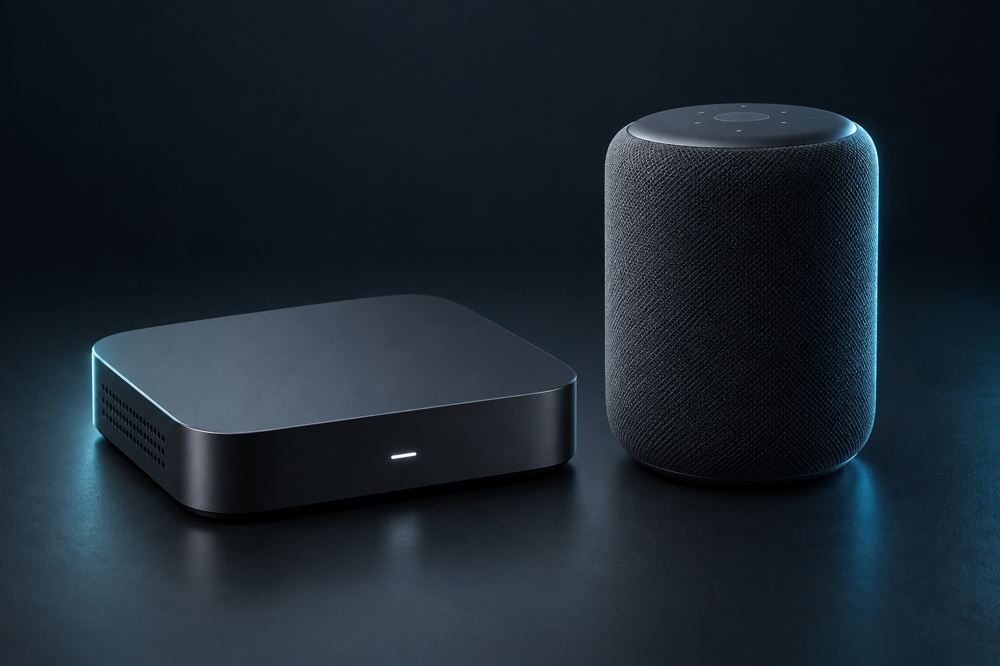
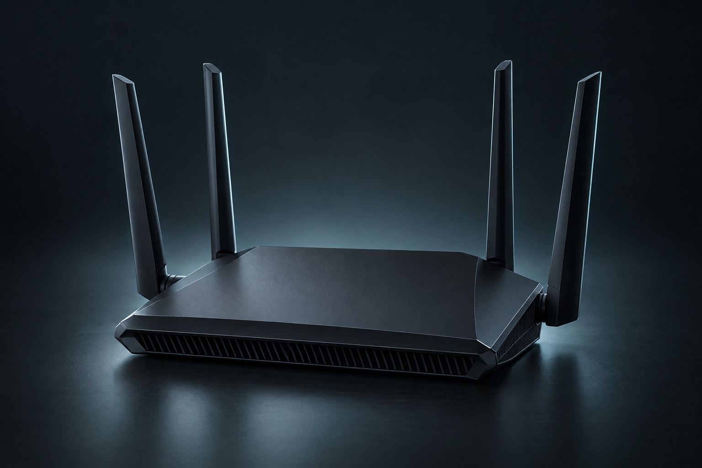
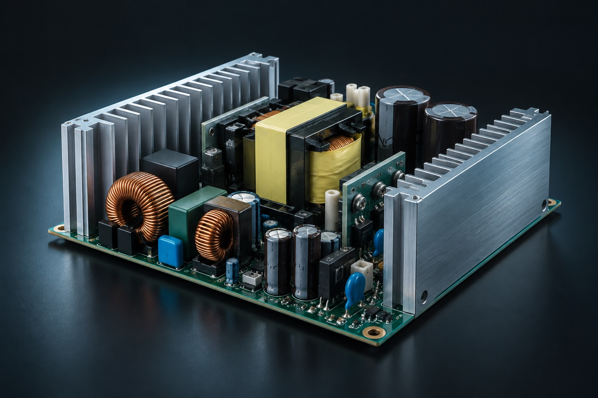

01 / ПОДКЛЮЧЁННЫЙ ДОМ

Медиа и умные устройства
IPTV/OTT-приставки и смарт-колонки.
Аппаратная платформа и встроенное ПО.
НЕЗАВИСИМЫЙ ЭЛЕКТРОННЫЙ ДИЗАЙН-ДОМ
Разрабатываем электронику, которая становится
продуктом. От первой схемы до серийного производства.
Мы соединяем аппаратную часть, программное обеспечение и производство в единый процесс.
Подключаемся к проекту на любом этапе: помогаем преодолеть технические ограничения или берём на себя разработку с нуля. Вы развиваете бизнес — мы решаем инженерные задачи.
Требования, платформа
и компонентная база
Схемотехника, PCB,
прошивка и корпус
Прототипы, испытания
и доработка решений
Подготовка изделия
к серийному выпуску
Опыт в устройствах, которыми
пользуются каждый день.

IPTV/OTT-приставки и смарт-колонки.
Аппаратная платформа и встроенное ПО.

GPON и роутеры. Разработка и адаптация устройств для сетевой инфраструктуры.

Блоки питания, выбор компонентов и тепловая модель устройства.
Конструирование корпусов, разработка пресс-форм и литьё.
Механика как часть единой инженерной системы.
Изображения устройств — концептуальные визуализации направлений разработки.
Поможем выбрать модель под требования
к продукту, сроки и степень кастомизации.
White Label
Брендирование готового изделия стороннего производителя.
Подходит, когда достаточно возможностей существующего продукта.
ODM
Развитие существующей платформы под задачи вашего продукта.
Базовая архитектура и часть низкоуровневых решений остаются у производителя.
Полный цикл
Собственная архитектура и контроль над всеми уровнями разработки.
Свобода вносить изменения и развивать продукт под новые требования.
OEM-производитель сам разрабатывает платформу, контролирует архитектуру и инженерную документацию, выпуская изделие для других брендов. При White Label компания выбирает готовый продукт и меняет бренд и упаковку. Это разные уровни участия в разработке — важно различать их при выборе партнёра.
Понимаем не только как разработать устройство, но и как подготовить его к выпуску.
У команды есть опыт работы с производственными предприятиями Китая — от потребительской электроники до пресс-форм.
ПРОИЗВОДИТЕЛИ, С КОТОРЫМИ МЫ РАБОТАЛИ
ЭЛЕКТРОННЫЙ ДИЗАЙН-ДОМ / МОСКВА
Технический партнёр для технологических
компаний России и СНГ.